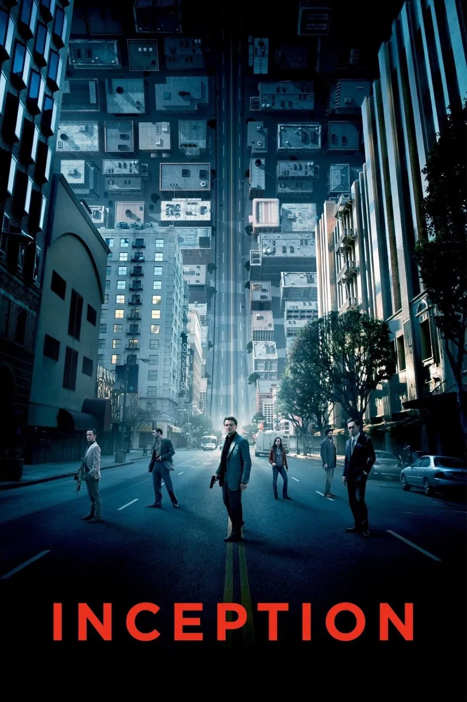

Inception (2010)

Nolan y un viaje por los sueños.
la icónica escena del rugido del león de Metro-Goldwyn-Mayer (MGM) fue filmada con un león real llamado Jackie en 1928? Ese rugido se convirtió en uno de los sonidos más famosos del cine y todavía se usa, aunque modernizado digitalmente.
Nolan y un viaje por los sueños.
Exploración espacial y emoción.
Futuro distópico con estética impecable.
Realidad vs simulación, acción y filosofía.
Contacto extraterrestre contado desde el lenguaje.